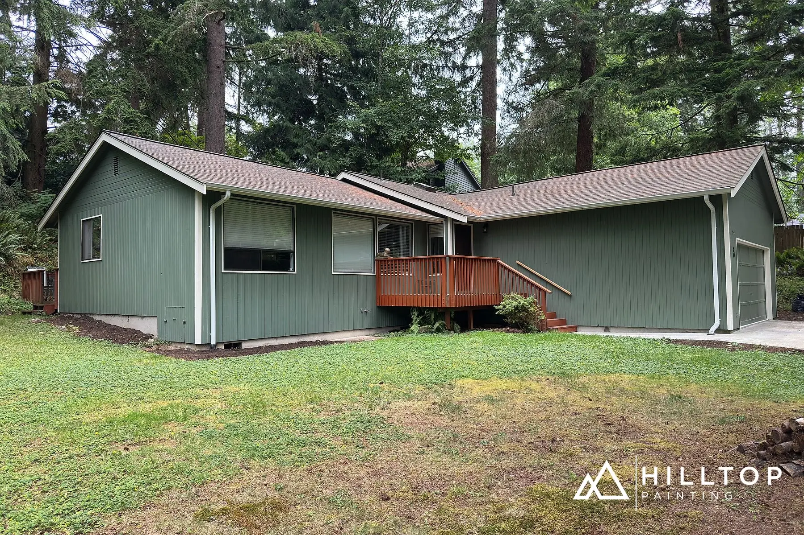

Sherwin-Williams / SW 6186
Dried Thyme
An herbal green alongside wood, stone and white.
Preview this color on the house →
The photographs
See it on a home.
Click a photo for the full view and its source.
Use ♡ to keep a personal shortlist.
Body photos include source-confirmed and secondary-attributed projects. Each is labeled below.
Opening the photo library…
Keep exploring
Go back to the sources.
Read the original research notes, exclusions and project evidence behind this collection.
Search coverage & limitations
Searched public text and image results with Dried Thyme, Sherwin-Williams, SW 6186/SW6186, exterior, siding, stucco, house, painting, before/after, homeowner, porch, door and shutter terms. Checked contractor portfolios, homeowner discussions, public social captions and carousels, Houzz project albums and paint answers, manufacturer posts, Pinterest, design articles and reference databases. Expanded the 25-photo Paint Color Consultants gallery and reviewed all seven Texas project views and all four original Grey Wolf carousel photographs. Visually inspected retained photographs and removed known duplicate files, crops and reposts. A source-confirmed label means an original project professional or owner names the paint; it is not laboratory verification of paint or camera color. Secondary body attributions and exterior accents have separate categories. One unverified Craftsman lead is outside the 39-photo main count. Some photos show only a detail, shade, partial obstruction or an unfinished work stage, as labeled. Source groups are not a census of unique houses, and image counts are not house counts. No recoloring or AI-generated images were introduced. This is a thorough public-web collection, not a guarantee of every photograph ever posted. Private, deleted, unindexed, login-restricted or inaccessible material may contain additional images.